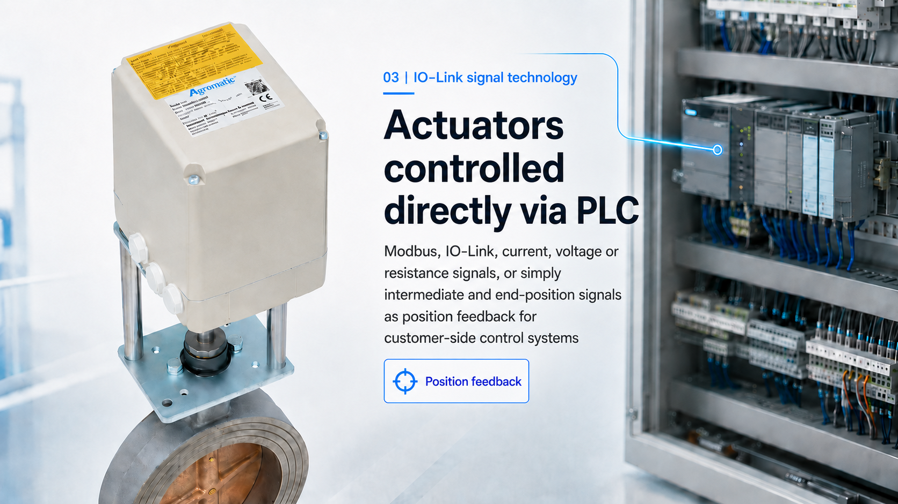

Position controllers
Electronic position controllers for positioning Agromatic actuators according to an external setpoint.
Accessories & control technology
Many Agromatic actuators can be equipped with mechanical options, position controllers, analog position feedback and digital interfaces. This allows flexible integration into customer PLC, process control and automation systems.

Modular system
The following options can be combined depending on series, operating environment and requirement. For Ex versions, we check the admissible configuration on a project-specific basis.
Electronic position controllers for positioning Agromatic actuators according to an external setpoint.
Potentiometers, Hall-effect absolute encoders and current outputs for position evaluation and feedback to customer control systems.
Auxiliary switches and switching/adjusting cams for end positions, intermediate positions and mechanically defined feedback points.
Mechanical equipment for emergency manual operation, torque adaptation, mounting situations, special shafts and valve connections.
Service switches, anti-condensation heaters and further additional electronic assemblies.
Digital signal technology for modern automation concepts with parameterization, feedback and diagnostics.
Applicable to many series
Control, feedback and interfaces are not limited to a single product family. Depending on the requirement, rotary, part-turn, linear and Ex actuators can be equipped accordingly.
Specification
For the appropriate version, we need the required control mode, the available control signal, feedback requirements, voltage, protection class, installation situation and ambient conditions.
Project inquiry
Describe the actuator, signal type, feedback and installation situation. We will check the suitable combination of actuator, controller, feedback and mechanical accessories.